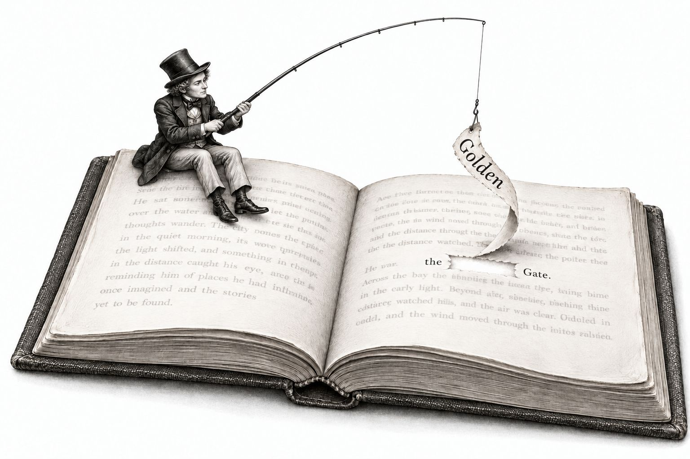
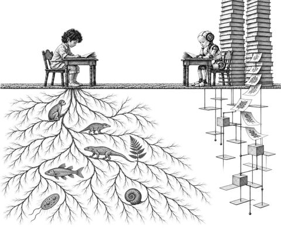

How Attention Works in a Transformer
A chatbot works by guessing what comes next in a text, one word at a time. We’ll look at how the words already in the text shape that guess. The chatbots in wide use today run on a design called the transformer. Its main step is attention, which sets how much each earlier word, and the word itself, contributes to the guess.
In 2019, the company OpenAI released a transformer called GPT-2. It came in four sizes. We’ll use GPT-2 small, the smallest version. Its internal numbers, called parameters or weights, were learned during training. OpenAI made these parameters free to download. The model is small enough to run on an ordinary computer.
Figure 1 shows our example. Adding “Golden” to “the Gate” changes the model’s top guess for the next word from “of” to “Bridge”. Three pieces go into the model: “the”, “Golden” and “Gate”. Out comes a probability for every word or symbol that could come next.
Guess what comes next
the Gate ?
GPT-2 smallthe Golden Gate ?
The big picture
The model predicts the next word
The model takes a piece of text and gives back a list of probabilities. The list has one probability for every word or symbol that could come next. The probabilities add up to 100%. Figure 1 shows the top of the list for both texts.
Without “Golden”, the probability spreads out over many options. With “Golden” in front of “Gate”, most of the probability goes to one word.
To write a longer text, the model makes the same kind of guess again for each new word.
The model works like the word suggestions above a phone keyboard. It takes the text so far and gives every possible next word a probability. A longer text is built one word at a time, with one guess per word.
Words become tokens, and tokens become numbers
The model works on numbers, so a text has to be turned into numbers before it goes in. First, the text is cut into pieces called tokens. Then each token is replaced by a list of numbers.
A token is a word or a piece of a word. Common words such as “Golden” and “Gate” are one token each. A rarer word is split into pieces. For example, “Gatekeeper” becomes “Gate” followed by “keeper”. Punctuation marks and line breaks are tokens too. GPT-2’s vocabulary is a fixed list of 50,257 tokens. We write that number as N. In our example, each word is exactly one token.
The model has a token table, also called an embedding table, with one row for each of the N tokens. Each row holds 768 numbers. A list of numbers like this is called a vector. The vector’s length is the model’s width. We write it as d, so in GPT-2 small, d is 768.
The row for “Gate” starts with −0.033, −0.348, 0.317, −0.164, −0.062, 0.079, −0.227, −0.096, and 760 more numbers follow. “Gate” starts from the same row in every text that goes into the model.
You can picture a token’s vector as a location on a map with d directions, one for each of its numbers. Tokens with related meanings end up at nearby locations. The vector for “Gate” sits closest to words about ways in, such as “door” and “entrance”.
The layers move each vector around this map. The drawing shows a flat slice of it with two directions, “Bridge” and “of”. After all the layers, the vector of “Gate” points closer to “Bridge” when “Golden” comes before it.
The token table holds no information about word order. “Gate” gets the same row whether it comes first or tenth. So the model has a second table, the position table. It has one row of d numbers for each place in a text: first, second, third and so on, up to C places. C is the context window, the most tokens the model takes in at once. For GPT-2 small, C is 1,024. In our example, “the” is first, “Golden” is second and “Gate” is third.
Each token’s row from the token table is added to the row for its place, number by number. The sum is the token’s starting vector. So the same word starts out with slightly different numbers in different places.
The numbers pass through twelve layers
Next, the three starting vectors pass through GPT-2 small’s 12 layers, one after another. Every layer has the same two steps, attention and then feed-forward. Each layer has its own parameters. Each token’s vector runs straight through all 12 layers as one line, called its residual stream. The residual stream stays d numbers long the whole way. After the last layer, one more step, the output step, turns the residual stream of “Gate” into the probabilities in Figure 1.
Figure 2 shows the three residual streams going through the 12 layers. Under each layer is the model’s best guess for the next word if we stopped after that layer.
Scroll sideways to see the whole figure.
The residual stream of “Gate” starts out holding the meaning of “Gate” alone. Layer by layer, it picks up information from “Golden” and “the”. By the last layer, it holds the model’s guess about what comes next.
Inside each layer
Every layer has two steps
Every layer has the same two steps: attention first, then feed-forward. All sharing of information between tokens happens in attention. Feed-forward then works on each token by itself, with everything attention has brought in. Each step adds a change of d numbers, called an update, to every token’s residual stream. In the figures, += marks the spot where an update is added. Attention is split into 12 parts that run side by side, called heads.
A layer holds its parameters in six matrices. A matrix is a block of numbers laid out in rows and columns. The model does most of its arithmetic with two operations. A dot product, written ·, multiplies two vectors number by number and adds up the results. Matrix multiplication, written ×, takes the dot product of a vector with each column of a matrix. The result is a new vector, with one number for each column.
Figure 4 shows the six matrices and what each one does. Attention uses four of them. Three make each token’s query (Q), key (K) and value (V), and the fourth is the combining matrix. Feed-forward uses the other two, the up-projection and the down-projection.
Figure 5 shows the relative sizes of GPT-2 small’s parts, as you get them when you download the model.
0.8 million · 0.6%everything else · 0.1 million · 0.1%
124 million numbers, 4 bytes each: about 500 MB
Step one: attention looks back at earlier words
Attention adds content to each token’s residual stream from the earlier tokens and from the token itself.
Each of the 12 heads measures, on its own, how much “the”, “Golden” and “Gate” affect the guess at ?
A search sets how much comes from each token. In each head, the search splits 100% across the tokens so far, and each token’s part is its share. Figure 6 shows the shares when “Gate” comes through layer 3.
Each head splits the 100% in its own way. In heads 3 and 5, “Golden” gets the largest share. In the other heads, “the” gets the largest share.
Think of the search box on a website. You type in some search terms. The search compares your terms with the label on each item and brings back the content of the best matches. In attention, each token gets its Q, K and V. The Q is the search terms, the K is the label, and the V is the content that comes back.
The tokens go through each layer one at a time: first “the”, then “Golden”, then “Gate”. Each token’s K and V go into the layer’s KV cache and stay there for every later token.
When a token comes through, its Q is compared with every K in the KV cache, its own included. The result of each comparison is a score. The scores are then turned into the shares, which add up to 100%. A bigger score gets a bigger share. Each V in the KV cache is multiplied by its share, and these are added up into the head’s result.
All 12 heads search at the same time, and each head gives a result of d/12 numbers. The 12 results are joined end to end into d numbers and multiplied by the combining matrix, as Figure 9 shows. The result, attention’s update, is added to the residual stream.
Scroll sideways to see the whole figure.
Each token’s K and V go into the KV cache and stay there. When “Gate” comes through, its Q is compared with every stored K, and the best matches bring in the most content. The 12 heads do this at the same time, each with its own d/12 columns of the Q, K and V matrices, so each head finds different matches.
Step two: feed-forward checks each word against learned patterns
After attention, feed-forward works on each token’s residual stream by itself. It compares the residual stream with 4d patterns, the columns of the up-projection. GPT-2’s designers made feed-forward four times as wide as the model, as in the original transformer. Each comparison is a dot product, called a match. Each pattern that matches adds its own vector, a row of the down-projection, and a stronger match adds more.
Scroll sideways to see the whole figure.
In layer 1, the best guess is “Gate” itself, both after attention and after feed-forward.
Attention moves information between the tokens. Feed-forward then works on each token by itself, with the patterns stored in its two matrices. For example, a pattern in a middle layer could match “Gate after Golden” and push the residual stream toward “Bridge”.
Putting it together
How “Golden” changes what comes after “Gate”
The word “Golden” changes the model’s guess about what comes after “Gate”. With “Golden” in the text, the top guess is “Bridge”, at 84.8%. Without “Golden”, the top guess is “of”, at 20.1%.
Scroll sideways to see the whole figure.
Information from “Golden” can reach “Gate” in one way, through attention. Figure 13 shows the share of “Golden” in every head of every layer.
Scroll sideways to see the whole figure.
Most of the dark squares sit in layers 1 to 5.
A few heads in layers 1 to 5 carry information from “Golden” into the residual stream of “Gate”. From then on, the residual stream holds information from “Golden”.
Picking the next word
After layer 12, the output step takes the dot product of the residual stream of “Gate” with the row of each token in the model vocabulary. The rows come from the token table, the same table the tokens started from. The results become probabilities that add up to 100%.
One token is then picked at random, and a likely token gets picked more often. The pick works like a draw from a hat in which 84.8% of the tickets have “Bridge” on them. With the randomness turned off, the top token comes out every time. Chat apps run with some randomness turned on, so asking again can give a different answer. The same randomness can be steered to hide a watermark in the text, and Did AI Write This? shows how.
The new token joins the other three and goes through the 12 layers the same way. In every layer, its Q is compared with every K in that layer’s KV cache. The KV cache holds a K from each of “the”, “Golden” and “Gate”, and the new token’s K joins them. The K and V of each earlier token are already in the KV caches, so those tokens don’t go through the layers again.
Text comes out of the model one token at a time. Each new token goes through the 12 layers once. With each new token, every layer’s KV cache grows by one K and one V.
Conclusion
Attention first appeared in 2014, as an add-on to models that translate between languages. In 2017, a team of researchers at Google built a whole model from attention and feed-forward steps. They called it the transformer and described it in a paper titled Attention Is All You Need.
The idea is simple. For each word, the model compares it with the words before it and takes in a share of each one, more from the words that match best. The searches for all the words in a text can happen at the same time, so the step runs fast on graphics chips. With that speed, researchers could train much bigger models on much more text. Repeated over 12 layers, the same step is how GPT-2 small connects “Golden” to “Gate” and guesses “Bridge”.
Researchers have built many variations of the transformer since 2017, and newer designs may replace parts of it. Most chatbots in wide use today still run on transformers built around this one step.
Appendix
A. What we simplified
- Every figure shows the model in use, with its parameters already set. Engineers call this use inference. We left out training, the process that sets the parameters.
- Each step reads a rescaled copy of the residual stream, and so does the output step. The rescaling keeps the numbers in a steady range. We left it out of the figures.
- Each head’s Q and K hold d/12 numbers, 64 in GPT-2 small, and attention divides every score by 8, the square root of 64. The division keeps the scores from growing with the length of Q and K. The output step’s scores are left as they are.
- In the figures, the tokens go through each layer one at a time. All the tokens can also go through a layer together, and the numbers come out the same.
- In normal use, the output step runs once, after layer 12. To show the guesses in Figures 2 and 12, we also ran it after each earlier layer.
- The rule in feed-forward is a smooth curve called GELU. Negative numbers come out of it a little below zero.
- For the drawing in 1.2’s intuition box, we took the token-table rows of “Bridge” and “of”, subtracted the average row from each, and drew the flat slice that holds both. The vector of “Gate” is drawn as it reaches the output step, after its last rescaling. Subtracting the average row changes no probability.
- The three larger GPT-2 sizes have more layers and wider vectors, and so do the transformers behind today’s chatbots. Their layers are built on the same plan.
B. Glossary
| Term | Meaning |
|---|---|
| Token | A token is a word or a piece of a word. Punctuation marks and line breaks are tokens too. GPT-2’s vocabulary holds N tokens, 50,257 of them. |
| Vector | A vector is a list of numbers. In the model, each token’s vector holds d numbers. |
| Model’s width | The model’s width, written d, is the length of the residual stream. For GPT-2 small, d is 768. |
| Token table | The token table, also called the embedding table, holds one row of d numbers for each of the N tokens in the vocabulary. Every token starts from its own row. |
| Position table | The position table holds one row of d numbers for each place in a text, up to the context window C. A token’s row from the token table is added to the row for its place. |
| Context window | The context window, written C, is the most tokens the model takes in at once. For GPT-2 small, C is 1,024. |
| Layer | A layer is one round of attention followed by feed-forward. The model has 12 layers. |
| Residual stream | A token’s residual stream is its vector of d numbers as it runs through all 12 layers. It starts as the token’s starting vector, and every step adds its change to it (+=). |
| Update | An update is the change of d numbers that attention or feed-forward adds to the residual stream. |
| Matrix | A matrix is a block of numbers in rows and columns. Each layer holds its parameters in six matrices. |
| Dot product | A dot product, written ·, multiplies two vectors number by number and adds up the results. |
| Matrix multiplication | Matrix multiplication, written ×, takes the dot product of a vector with each column of a matrix. The result has one number for each column. |
| Attention | Attention is the step where information from earlier tokens is added to a token’s residual stream. |
| Head | A head is one search inside attention. Each head has its own d/12 columns in each of the Q, K and V matrices. Each layer has 12 heads. |
| Query (Q) | A query, or Q, is a vector made from a token’s residual stream by the Q matrix. It is compared with every K in the KV cache. |
| Key (K) | A key, or K, is a vector made by the K matrix. Each token’s K goes into the KV cache, and the Q of every later token is compared with it there. |
| Value (V) | A value, or V, is a vector made by the V matrix. Each token’s V goes into the KV cache and becomes part of later heads’ results. |
| Score | A score is the dot product of a Q and a K, divided by 8. A bigger score marks a better match. |
| Share | A share is a score turned into a percentage. A head’s shares add up to 100%. |
| Combining matrix | The combining matrix is attention’s fourth matrix. The 12 heads’ results, joined, are multiplied by it, and the outcome is attention’s update. |
| KV cache | The KV cache, short for key-value cache, is each layer’s collection of the K and V of every token so far. |
| Feed-forward | Feed-forward is the step that works on each token by itself. It checks the token’s residual stream against 4d patterns. |
| Match | A match is the dot product of the residual stream with one of the up-projection’s 4d columns. A big match shows that the residual stream looks like that column’s pattern. |
| Up-projection | The up-projection is feed-forward’s first matrix, d × 4d. Each of its 4d columns holds a pattern. |
| Down-projection | The down-projection is feed-forward’s second matrix, 4d × d. Each of its 4d rows holds the vector one pattern adds. |
| Output step | The output step comes after layer 12. It takes the dot product of the residual stream with the token-table row of every token in the vocabulary and turns the results into probabilities. |
| Parameters | The parameters, also called weights, are the numbers the model learned in training. They fill the matrices and the two tables. GPT-2 small has 124 million of them. |
| Watermark | A watermark is a hidden pattern in the way a model picks its tokens. A detector with the key to the pattern can find it in the text later. |
| Inference | Inference is the model in use, with its parameters already set. Every figure shows inference. |
C. More on how artificial minds read and learn
If this felt too dry and you’d like an intuitive feel for attention, Who Killed Aldous Finch? explains the same ideas through a country house murder mystery. Each new witness reads every placard already pinned in the room and then pins up one more. At the end, each clue gets matched to a part of the transformer.

An Artificial Mind of Your Own explains how an artificial mind is trained and how to run one on a laptop.